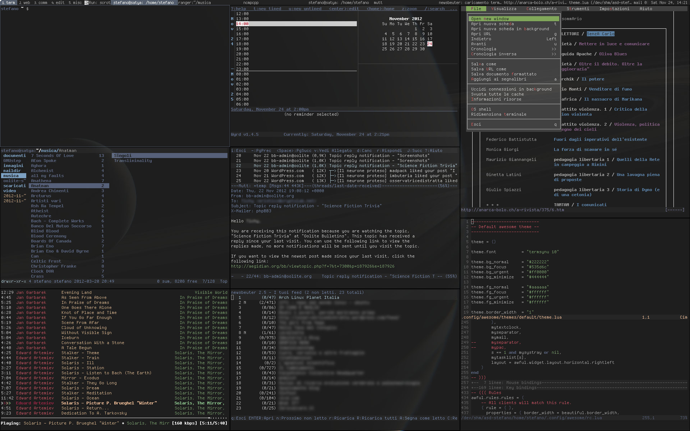

Developing without a mouse
Power of the commandline
Purpose of This Talk
Is to
- Share my experience of using the commandline and no mouse;
- Discuss what tools and configurations are useful for a developer.
Is not to
- Discuss developing without a rat!
- Advocate that you have to use only the keyboard and commandline;
- Start a war between GUI and commandline, or VIM and EMACS.
Background
Once upon a time (in 2004), as an undergraduate student, being very extreme,
I buried (literally) my mouse and trackpad under my feet. For more than four
years, till the end of 2009, I did not have a mouse, nor a working trackpad.
I did not have to use a mouse until I met:
- DOTA
- Macbook Pro
- Company Policies
- A non computer science degree girlfriend (now my wife) who needs to use my computer
Why Commandline?
- Mature
- Abundant tools
- Customizable
- Simple
- Fast! - 90% time kept fingers in the Home Row
Life of a Developer
Life as a developer, especially a student developer, was very simple, I needed
only a few things: A nice window manager, a music player, an email reader, a
chat client, a web browser, developer tools and manga.
Life of a Developer
Window Manager - Awesome
- Cascading window manager - multiple auto-layout algorithms available;
- Highly configurable using Lua;
- Key bindings to switch between windows and even monitors;
- This was the one!
Life of a Developer
Window Manager - Awesome

Life of a Developer
Email reader - Mutt
"All mail clients suck. This one just sucks less." - Author of mutt, circa 1995
- Homepage: http://www.mutt.org/;
- Supports POP3, IMAP, SMTP, SSL, TSL etc.;
- VIM-like key bindings, but can be configured;
- Highly customizable.
Life of a Developer
Music player - MOC
- Homepage: http://moc.daper.net/
- Supports ID3 tags;
- Supports most music formats: MP3, OGG, FLAC etc. through JACK library;
Life of a Developer
Chat client - Weechat + Bitlbee
- Weechat: A fast, light and extensible chat client
- Bitlbee: BitlBee brings IM (instant messaging) to IRC clients. It's a great solution for people who have an IRC client running all the time and don't want to run an additional MSN/AIM/whatever client.
Life of a Developer
Web browser - Firefox + Vimperator
Life of a Developer
Terminal Multiplexer - Screen/Tmux
Terminal multiplexer lets you switch easily between several programs in one terminal, detach them (
they keep running in the background) and reattach them to a different terminal.
- Powerline status line library and Solarized color scheme supports tmux!
Life of a Developer
Manga
I read Manga simply using either a web browser or a commandline based image viewer such as "feh".
Why not Commandline?
- High learning curve
- Too acient
- Not intuitive